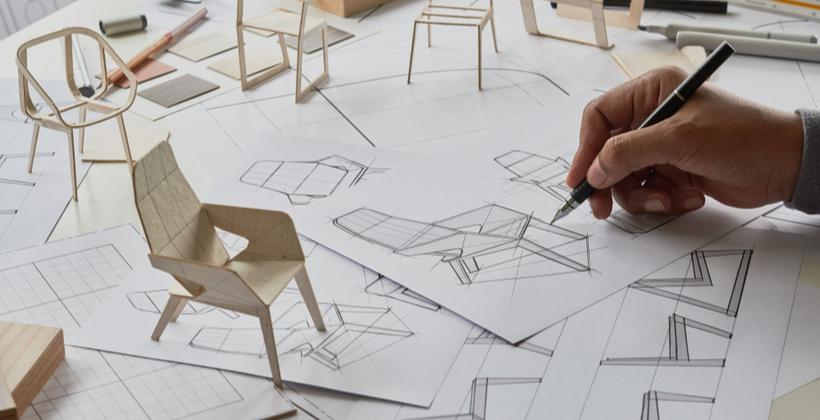

Reflections on "Food Rules"
A year ago, I came across an interesting book on my friend‘s bookshelf: “Food Rules” by Micheal Pollan. I finally read the book a few months ago. It’s short and straightforward—ideal for an impatient reader with a shorter attention span like myself. I enjoy most the way these rules echo established Islamic principles and resonate with my own life experiences, all while remaining clearly practical. In this post, I highlight a few gems I plan to carry into my life, elaborating on why I’ve chosen them.My Gems
Rule #7 ”Avoid food products with ingredients a 3rd grader can’t pronounce!”
Our relationship with food rests upon how we define “good” food.
The Quran uses expressive verbiage to define food quality. Michael Pollan uses the benchmark of third grade literacy. Both definitions of goodness segue nicely into intention.
Allah says in the Quran:
وَكُلُوا۟ مِمَّا رَزَقَكُمُ ٱللَّهُ حَلَـٰلًا طَيِّبًا ۚ وَٱتَّقُوا۟ ٱللَّهَ ٱلَّذِىٓ أَنتُم بِهِۦ مُؤْمِنُونَ (٨٨)
"but eat the lawful and good things that God provides for you. Be mindful of God, in whom you believe." (Quran, Surah Ma'idah 5:88)
In the verse above God commands us to eat what is “Halal” and “tayib”. Tayib literally means “good”, however the connotation of Tayib is something that embodies goodness in its essence and is removed from harm in every aspect of its existence. Food that is Tayib must necessarily be Halal . It is also food that is good for you. Within this is food that was prepared with praiseworthy intention, food made with love, or food that nourishes you and acts as medicine .
Prioritizing food that is “Tayib” has always been a part of my life. Throughout my childhood, my parents shopped for groceries at the local food co-op. In grad school, I learned to choose groceries for nourishment instead of sweetness. Today, my wife and I try to eat home-cooked food more often than takeout. It is unfortunate that all of these are markers of privilege. My pursuit of good food was always purely intuitive. Though third grade literacy does not encompass the Islamic ideal of excellent food, Pollan’s advice can help more consciously pursue “good”ness by quickly filter out the opposite. We must define well the aspects of our lives we wish to stand the test of time. Pollan’s heuristic provides that clarity to ensure “Tayib” food continues to be a part of my life.
Another reason this rule resonates is that it speaks to intentionality. There is a Hadith from the Prophet Muhammed ﷺ that specifically mentions intention:
Narrated on the authority of 'Umar bin al-Khattab (ra) who said:
I heard the Messenger of Allah (ﷺ) say: "Actions are (judged) by motives (niyyah), so each man will have what he intended. …" Bukhari & Muslim .
This hadith promises that even the most mundane of actions can be regarded amongst the best of deeds. One way I see this manifest is in our approach to eating. We can eat with the lofty intentions of enabling our worship, thus making the eating itself part of the worship. We can eat to energize ourselves to do charitable deeds. We can eat out of gratitude for the sustenance God has sent. We can hold all of these intentions simultaneously, and be rewarded for all of them, even though we are only putting food in our mouth.
The challenge is, our praiseworthy intentions might fall insincere if the food we put in our mouths is devoid of a sense of goodness, rather only a concoction of unpronounceable chemicals.
It’s important to mention here that the quality of food we eat is a product of the food we have access to. In America, food access is one of the many prongs of structural anti-blackness and class discrimination(reference). For that reason, we must note that the reward for our actions and any positivity we hold in connection, is in accordance with what is within our capability. Additionally, this is a reminder to myself that alongside seeking higher quality food for myself, it is important to work to ensure the same high quality food is available to others.
I like Rule #7 because it defines “good” food in a way that is versatile and intentional. I appreciate the clarity of this rule and the way it distills the larger principle of high quality food into a simple binary (i.e. does the food have crazy chemicals in it? Yes or No?).
Rule #46: Stop eating before your full
In my opinion, moderating food is simultaneously the easiest and hardest recommendation to follow. The common sense on this one goes deep, and the Islamic evidence to support this rule is well known. In my own life, I’ve witnessed the benefits of abiding by this advice. Still it’s hard.
If you’ve ever been stuffed with food to the point of bursting (think: thanksgiving dinner, iftar at a friend's place during Ramadan, all-you-can-eat buffet), you know it is severely uncomfortable. Nothing about feeling that full feels beneficial. Being so full makes movement itself an inconvenience. If the food we eat is meant to give us energy to keep living life, but the extent to which we eat impedes meaningful activity then there must be a gap here. Common sense tells us that the sweet spot is somewhere in the middle—eat till we are no longer hungry then get back to living life.
In the Quran, God says,
۞ يَـٰبَنِىٓ ءَادَمَ خُذُوا۟ زِينَتَكُمْ عِندَ كُلِّ مَسْجِدٍ وَكُلُوا۟ وَٱشْرَبُوا۟ وَلَا تُسْرِفُوٓا۟ ۚ إِنَّهُۥ لَا يُحِبُّ ٱلْمُسْرِفِينَ (٣١)
Children of Adam, dress well whenever you are at worship, and eat and drink [as We have permitted] but do not be extravagant: God does not like extravagant people.(Quran, Surah Al-A'raf 7:31)
Here God is instructing us to eat, but to do so in a way that is not excessive. Mercifully, excess is not explicitly defined here. Nevertheless, our own self-reflection will serve. In all of the experiences we might have had encouraging ourselves on food, we can think back and remember a point where the eating stopped being about nourishment. At some point eating became a way to itch a lust for more. Feeding into this (pun intended) cannot be conducive to our spiritual well-being
In a Hadith from the Prophet Muhammed ﷺ, Miqdam bin Ma'dikarib said:
"I heard the Messenger of Allah ﷺ saying: 'The human does not fill any container that is worse than his stomach. It is sufficient for the son of Adam to eat what will support his back. If this is not possible, then a third for food, a third for drink, and third for his breath."
Tirmidhi
Most Muslims that I’ve met are familiar with this heuristic of “1/3 food, 1/3 water, 1/3 air”, meaning at most we eat until we are 2/3rds full. What is often overlooked is that this is the suggested maximum amount. The ideal it seems sits shy of this.
In my own life I have had seasons of success and failure in heading this Prophetic advice (and thereby following rule#46). Graduate school was a particularly productive season in this regard. I lived alone so I had complete autonomy over my diet. I was also incentivized to eat economically because I was on a grad student stipend(if you know, you know! Hahaha). I won’t exaggerate my struggle, I could afford all the food I needed. I ate all my meals, I just had smaller plates. I found I was just as energetic, I was in the best shape of my life, and I felt more grounded spiritually. Nowadays, there are more challenges to a reserved diet: My wife’s cooking is amazing(mashaallah), eating less at dinner parties is often seen as rude, or I end up eating extra food in the fridge to avoid it going to waste. None of these are insurmountable.
I like Rule#46 because it resonates so clearly with Islamic principles and it makes sense. It’s hard to do, but I think I’ll keep trying.
Rule #59 Try not to eat alone!
The practice of eating with others has always been a part of my life and it is something I’m working to keep in my life.
Anecdote: Dinner time was a big part of my childhood. Firstly, everyone had to be present, you had to finish your food, and the meal wasn’t over when the food was done, rather when the conversation was finished. All 6 of us siblings would sit together and digest my parents’ perspectives on the world, the lived experience, and what it means to exist as Black Muslim American in the 21st century. More often it was a discussion rather than a lecture. My older siblings would share their own ideas about how our values manifest in everyday life and what they should/should not be able to do. We debated passionately. I sat quietly as the baby of the family and listened until I was old enough to stand by my own views. Then dinner was over.
Just as Michael Pollan writes in his book, dinner together was not only about the food anymore. In the midst of conversation, we took our time eating, we were less likely to stuff ourselves, and we connected all the meanwhile. There is an inherent benefit to eat in good company.
The Prophet ﷺ alludes to this same idea in a Hadith,
Narrated Wahshi ibn Harb:
The Companions of the Prophet (ﷺ) said: Messenger of Allah (ﷺ) we eat but we are not satisfied. He said: Perhaps you eat separately. They replied: Yes. He said: If you gather together at your food and mention Allah's name, you will be blessed in it.
Abu Dawud
Nowadays, I try to hold onto this same family spirit in my new family. It’s just my wife and myself, but we have a rule: “we eat together”…..and so far it’s working.
Other rules from the book, I’m a fan of:
#1 eat food
#5 avoid food with sugar in top 3 ingredients
#6 avoid food with more than 5 ingredients
#13 eat only food that will eventually rot
#15 get out of the super market when you can can
#28 buy a freezer
#32 don’t overlook oily little fishes
#35 eat sweet things as you find them in nature
#39 eat all the junk food you want as long as you cook it yourself
#47 eat when your hungry not when you’re bored
#48 eat slowly
#52 buy smaller plates and glasses
#53 serve a proper portion and don’t go back for seconds
#58 do all your eating at a table
a#61 treat treats as treats
#62 plant a vegetable garden if you have the space a window box if you don’t
#63 cook
#64 everything in moderation including moderation
Related Posts